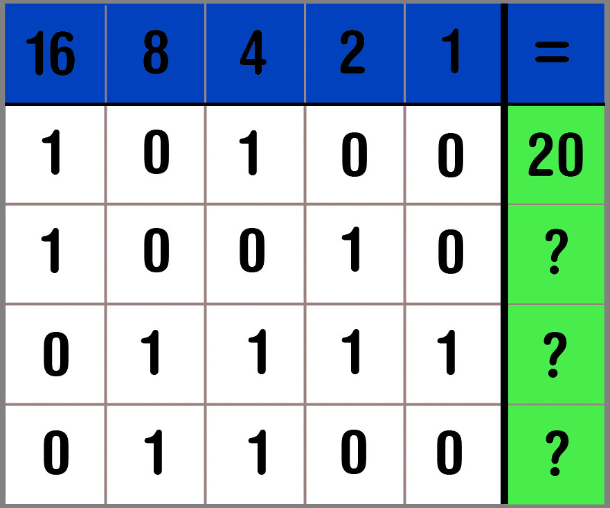

.jpeg)
Het binaire stelsel bestaat uit 2 cijfers: een 1 en een 0. Met deze 1 en 0 kan je alle getallen maken die je wilt. Binair betekent tweetallig. Het is dus een tweetallig stelsel Het decimale stelsel, ookwel het tientallig stelsel genoemd, wordt gebruikt buiten de computertaal. Het is makkelijker af te lezen dan het binair stelsel en je kan er ook alle getallen mee maken. Het is makkelijker af te lezen omdat het 10 getallen gebruikt 0 t/m 9. Dit stelsel kent iedereen.
Met deze afbeelding kan je zelf rekenen met het binair stelsel. Als er een 1 staat tel je het getal dat er in de blauwe kolom staat bij op. Deze getallen vermenigvuldigen zich met 2. Het meest linker getal is een 1, die daarnaast is een 2 en het 5e getal vanaf links is 16. Als er 10010 staat, dan staat daar eigenlijk dat de 16 en 2 aanstaan en de 8, 4 en 1 uitstaan. De getallen die aanstaan te le bij elkaar op en dan staat er dus het getal 18.
| Binair getal | Decimaal getal |
|---|---|
| 00000 | 0 |
| 00001 | 1 |
| 00010 | 2 |
| 00011 | 3 |
| 00100 | 4 |
| 00101 | 5 |
| 00110 | 6 |
| 00111 | 7 |
| 01000 | 8 |
| 01001 | 9 |
| 01010 | 10 |
| 10000 | 16 |
| 10101 | 21 |
| 100001 | 33 |
| 101001 | 39 |
Je kan met het binaire stelsel ook (hoofd)letters, leestekens en andere tekens maken. Dat is dan volgens het ASCII stelsel. Iets wat opvalt is dat als je een hoofdletter schrijft je dezelfde 'code' gebruikt, maar dan met één extra 1 na de eerste 1.
| Decimaal getal | Binair getal | Symbool |
|---|---|---|
| 65 | 1000001 | a |
| 97 | 1100001 | A |
| - | - | - |
| - | - | - |
| - | - | - |
| - | - | - |
| - | - | - |
| - | - | - |
| - | - | - |
| - | - | - |
| - | - | - |
| - | - | - |
| - | - | - |
| - | - | - |
| - | - | - |